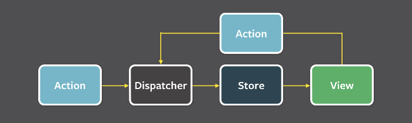

一、状态管理器
组件化开发----组件间通讯----单向的数据流----高内聚、低耦合
所有的状态全部统一供应，谁用谁取 ----- 状态管理器
flux
redux
react-redux
二、flux
React 本身只涉及UI层，如果搭建大型应用，必须搭配一个前端框架。
Flux将一个应用分成四个部分。
* View： 视图层
* Action（动作）：视图层发出的消息（比如mouseClick）
* Dispatcher（派发器）：用来接收Actions、执行回调函数
* Store（数据层）：用来存放应用的状态，一旦发生变动，就提醒Views要更新页面

Flux 的最大特点，就是数据的"单向流动"。
1. 用户访问 View
2. View 发出用户的 Action
3. Dispatcher 收到 Action，要求 Store 进行相应的更新
4. Store 更新后，发出一个"change"事件
5. View 收到"change"事件后，更新页面
6.左侧可以理解为组件的钩子函数自动触发的一些action
7、 Dispatcher 的作用是将 Action 派发到 Store、。你可以把它看作一个路由器，负责在 View 和 Store 之间，建立 Action 的正确传递路线。注意，Dispatcher 只能有一个，而且是全局的。
二、redux
Redux 是 JavaScript 状态容器，提供可预测化的状态管理。
三大原则
单一的数据源
整个应用的 state 被储存在一棵 object tree 中，并且这个 object tree 只存在于唯一一个 store 中
State是只读的
唯一改变 state 的方法就是触发 action，action 是一个用于描述已发生事件的普通对象
使用纯函数执行修改
为了描述 action 如何改变 state tree ，你需要编写 reducers。
目标：todolist ----- react+redux+bootstrap
1、准备
bootstrap
index.html引入需要的文件，如果是脚手架生成的项目，那么index.html在public文件夹下
2、入口程序 entry.jsx
store.subscribe(render);监听组件状态的变化，如果一旦变化，执行render函数
import React from 'react';
import ReactDOM from 'react-dom';
import MyButtonController from './MyButtonController.jsx';
//import Test from './Test.jsx';
import store from './store/index.js';
function render(){
ReactDOM.render(
<MyButtonController />,
document.getElementById("root")
);
}
render();
store.subscribe(render);
2、MyButtonController.JSX ---- 总体的组件
内部进行封装了一个类似UI库中的组件MyButton,在调用此组件的时候进行设置了很多的属性
| 名称 | 对应值 | 含义 |
flag | this.state.flag | 此案例中显示的 是AAA还还是BBB |
todolist | store.getState().todolist | store获取的状态值，值由store提供 |
getVal | this.getValHandler | 通过传递事件对象event，可以获取内部组件的输入框的值event.target.value |
onClick | this.addItemHandler | 添加一个todo的方法，此处可以进行dispatch一个action |
onDelfn | this.delItemHandler | 删除某一个todo,函数有一个参数为index |
如果你的项目中有ajax请求，在请求成功的时候进行dispatch
import React, { Component } from 'react';
import MyButton from './MyButton.jsx';
import store from './store/index.js';
class MyButtonController extends Component{
constructor(props){
super(props)
this.state = {
val:"",//用来储存输入框中的值
flag: false //显示AAA还是BBB
}
}
//通过事件对象得到输入框中的值
getValHandler(event){
this.setState({
val: event.target.value
})
}
//添加一个TODOitem，派发一个action
addItemHandler(){
console.log(this.state.val)
store.dispatch({
type: "ADD_TODO_ITEM",
data: this.state.val
})
}
//删除一个ITEM，派发一个action
delItemHandler(index){
store.dispatch({
type: "DEL_TODO_ITEM",
data: index
})
}
render(){
return (
<MyButton
flag = { this.state.flag }
todolist = { store.getState().todolist }
getVal = { this.getValHandler.bind(this)}
onClick = { this.addItemHandler.bind(this) }
onDelfn = { this.delItemHandler.bind(this) }
/>
)
}
}
export default MyButtonController;
3、UI组件----纯组件----无状态的组件 MyButton.jsx
com表示的是如果需要以某一个条件判断显示哪一个组件的时候使用
給input绑定了一个onChange事件 ，调用的是父组件的属性为getVal所对应方法，
給添加按钮绑定onClick事件，调用父组件的属性为onClick所对应方法，
給删除按钮绑定onClick事件，调用父组件的属性为onDelfn所对应方法，注意传递的参数
渲染数据使用的是props.todolist
不要在纯组件中进行直接调用store中的数据
import React, { Component } from 'react';
const MyButton = function(props) {
var com = props.flag ? <h1>AAA</h1> : <h1>BBB</h1>;
return (
<div>
{com}
<div className="form-group">
<label htmlFor="username">Email address</label>
<input type="text" onChange = { props.getVal } className="form-control" id="username" placeholder="用户名"/>
</div>
<button onClick={props.onClick} className="btn btn-success">添加</button>
{/*<!-- ///////////////////////////// -->*/}
<table className="table table-bordered">
<thead>
<tr>
<th className = "text-center">#</th>
<th className = "text-center">用户名</th>
<th className = "text-center">操作</th>
</tr>
</thead>
<tbody>
{
props.todolist.map((item, index) => {
return (
<tr key = { index }>
<th className = "text-center">{ index+1 }</th>
<th className = "text-center">{ item }</th>
<td className = "text-center">
<button onClick = { props.onDelfn.bind(this, index)} className = "btn btn-xs btn-danger">删除</button>
</td>
</tr>
)
})
}
</tbody>
</table>
</div>
)
}
export default MyButton;
4、store
store
reducer
state
home
homebanner.js
homelist.js
kind
kindlist.js
index.js
todolist.js
index.js
store/index.js
import { createStore } from 'redux';
import reducer from './reducer/index.js';
//创建了单一的store，reducer只可能有一个
const store = createStore(reducer);
export default store;
store/resucer/index.js
combineReducers是用来合并reducer的，因为creatstore只能有一个reducer，但是一个reducer又只对应一个状态
import { combineReducers } from 'redux';
import homebanner from './state/home/homebanner.js';
//import homelist from './state/home/homelist.js';
import todolist from './state/todolist.js';
const reducer = combineReducers({
//各个组件中各自的状态
//获取值 store.getState().homebanner
homebanner,
todolist
//homelist
})
export default reducer;
store/resucer/todolist.js
单个reducer是一个纯函数，定义了初始状态和action，必须给初始状态赋值，必须有返回值
const todolist = (state = [], action) => {
const { type, data } = action;
switch (type){
case "ADD_TODO_ITEM":
return [...state, data];
break;
case "DEL_TODO_ITEM":
state.splice(data, 1);
return state;
break;
default:
return state;
break;
}
}
export default todolist;